Question 1
A CMDB Administrator would like to minimize stale CIs in the CMDB.
Which CMDB Health Dashboard scorecard displays this information?
Question 2
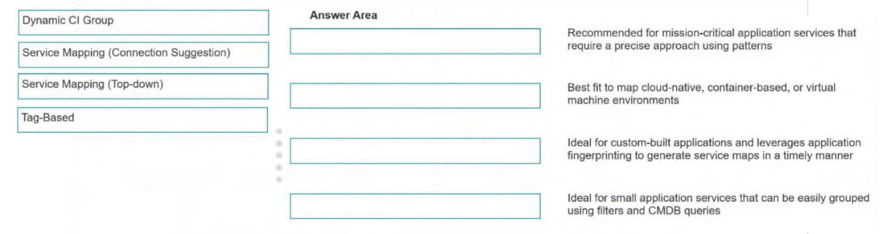
DRAG DROP -
Drag and drop the application service type to the best description.
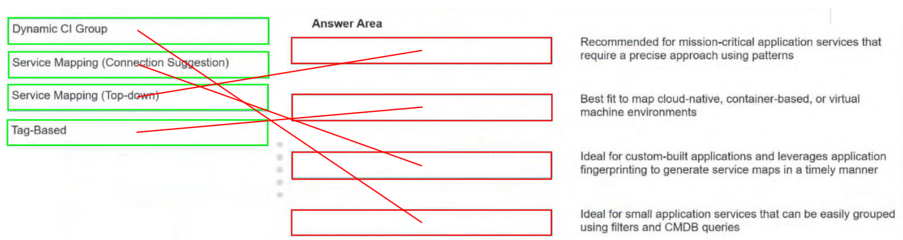
Question 3
A new custom class is needed to reflect a new application being managed in the CMDB.
Which roles are minimally needed to add this custom CI class?
Question 4
What is the relationship between an application and a server?
Question 5
User endpoint devices are imported into the CMDB and populate the ‘Assigned to’ [assigned_to] field on the Computer [cmdb_ci_computer] CI. The Asset team puts in a request for the Configuration Analysts to populate the ‘Assigned to’ field on the related Asset.
What action does a Configuration Analyst take to achieve this in an automated way?
Question 6
A CMDB Administrator needs to create a new CI class for the Internet of Things (IoT) Sensor in ServiceNow.
What are the recommended practices for this specific activity? (Choose two.)
Question 7
A Change Manager aims to streamline ITSM processes by automatically populating fields on the Change form when a CI is selected. The Configuration Management team is working to ensure that the Change Group field is populated for all managed CIs.
As a result, which base system field on the incident form will be automatically populated after selecting a CI?
Question 8
Which ServiceNow solution creates automatic relationships?
Question 9
A CMDB Administrator is reviewing the health of the CMDB and notices a large percentage of the Hardware CIs are missing serial numbers. The Administrator is concerned this may cause duplicate CIs and would like to resolve the issue in a timely manner.
What structured guidelines provided by ServiceNow are available to troubleshoot and resolve the issue?
Question 10
Configuration Management needs to ensure data quality for all CIs in the CMDB.
What areas of data quality for CIs are in the CMDB Health Dashboard? (Choose two.)
Question 11
The CMDB Configuration Management team has successfully developed a healthy and trusted CMDB. They have integrated discovered infrastructure data, accurately referenced non-discoverable data (such as change and support group information), and made the CMDB service-aware using Service Mapping.
Which field on an Incident form is automatically populated after a CI is selected that references an appropriate support group?
Question 12
CMDB class owners are receiving tasks under the ‘My Work’ tab in the CMDB Workspace.
Which CMDB management tool is generating these tasks?
Question 13
A CMDB Administrator wants only the CIs of Principal Classes to appear in CI reference fields, for example the CI reference fields accessible from an Incident Form.
Where does the CMDB Administrator designate Principal Classes?
Question 14
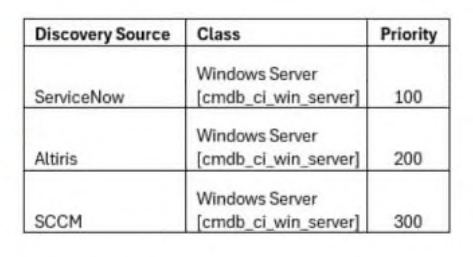
The following Reconciliation Rules were configured for ServiceNow, Altiris, and SCCM:
Which are true? (Choose two.)
Question 15
A CMDB Administrator needs to import external data into the CMDB. As the CMDB Administrator wants to reduce the risk for creating duplicates and to update information from unauthorized sources, it has to be ensured that the Identification and Reconciliation API will not be bypassed.
What is the recommended method to import data into the CMDB utilizing the Identification and Reconciliation API?
Question 16
A Configuration Manager has configured a multiple data sources which are all authorized to update the same class and the same set of class attributes in the CMDB.
What can the Configuration Manager do to control which data source should be authoritative source of truth for a specific class of set of class attributes?
Question 17
Which CMDB 360/Multisource CMDB the Dynamic Reconciliation Rules will also be enabled. Based on the request of the management, a CMDB Administrator has to set up multiple Dynamic Reconciliation Rules.
Which are available ‘Dynamic Rule Types’ within the ‘Create Reconciliation Rule’ wizard? (Choose two.)
Question 18
The following identification rule for a CI class has been defined:
Two new CI records are imported into the hardware class of the CMDB:
CI1: The name of this CI record matches the name of an existing CI record in the CMDB.
CI2: The IP address of this CI record matches the IP address of an existing CI record in the CMDB.
Which is correct based on the identification rule and the imported CI records?
Question 19
A customer wants recently imported server records to be automatically reclassified into more specific CMDB classes after being discovered using ServiceNow Discovery.
During the discovery process, if existing Server [cmdb_ci_server] records are reclassified into the Linux [cmdb_ci_linux_server] and Windows Server [cmdb_ci_win_server] classes, which reclassification operation occurred?
Question 20
A Platform Data Owner wants to improve data quality with a few reconciliation rules across the five discovery sources that are being used. The Data Owner knows the best option is to include CMDB 360/Multisource CMDB to manage and monitor discovery sources, but the company currently does not have a license for ITOM Discovery that is required for CMDB 360/Multisource CMDB.
What can the Data Owner do in this case?
Question 21
Which ServiceNow solution creates automatic relationships?
Question 22
The Apache Web Server Identification Rule is configured with the following Criterion attributes:
Class -
Configuration file -
Version -
Yesterday, an Apache Web Server CI was discovered as part of Service Mapping. Today, the application owner upgraded Apache to a different version and reran discovery of the service.
What will happen in the CMDB?
Question 23
Configuration Management requires an accurate inventory of devices to be reflected in the CMDB.
Which are common use cases for using Agent Client Collector (ACC)? (Choose two.)
Question 24
An organization needs to maintain non-discoverable attributes, such as warranty expiration dates, for hardware CIs. These attributes are not updated by automated discovery tools.
What method ensures these attributes are accurately maintained for all CIs?
Question 25
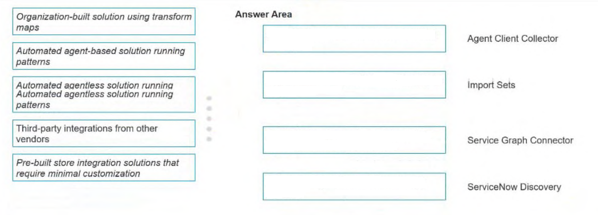
DRAG DROP -
ServiceNow provides a suite of CMDB management tools designed to effectively ingest, manage, and maintain CIs and relationships.
Drag and drop the design architecture to its management tool.
Some options may not apply.
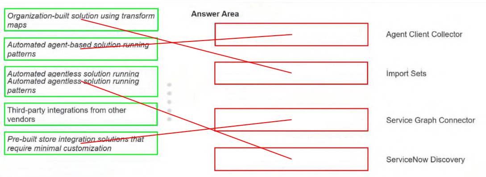
Question 26
When integrating data into the CMDB using import sets and transform maps, which type of script is added to ensure the data is processed through the IRE?
Question 27
The following Reconciliation Rules were configured for ServiceNow, Altiris, and SCCM: Which are true? (Choose two.)
Question 28
A CMDB Administrator has installed a Service Graph Connector and customized a script transform.
What will happen on subsequent upgrades if the default definition of the script transform is updated?
Question 29
A CMDB Administrator would like to minimize stale CIs in the CMDB. Which CMDB Health Dashboard scorecard displays this information?
Question 30
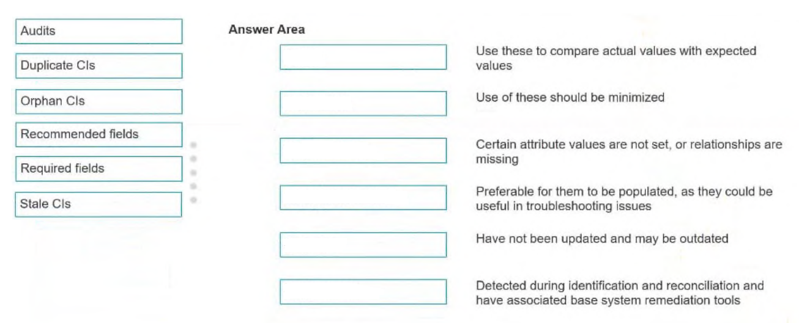
DRAG DROP -
Drag and drop the CMDB Health Dashboard metric to the description.
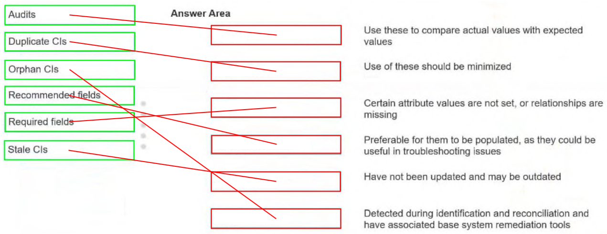
Question 31
A CMDB Administrator is asked to clean up the CMDB duplicates.
What is the preferred way to manage this task?
Question 32
A CMDB Administrator identifies duplicate CIs. One was created by a manual import, and the other one was created by automated discovery. The discovered CI has the latest IP address, while the manually imported CI has an accurate relationship to a critical business application.
How does the Administrator use the Duplicate CI Remediator to resolve this issue?
Question 33
A CMDB Administrator wants to remove all Linux Servers in the organization that have not been updated in six months.
Which recommended action does the Administrator take in Data Manager?
Question 34
The CMDB Administrator group aims to display meaningful results on the CMDB Health Dashboard Compliance Scorecard for server records that are not on the latest patch.
What must be configured to achieve this goal?
Question 35
A CMDB Administrator has been tasked with gathering information for a presentation to leadership. The Administrator needs to provide Duplicate CI, Orphan CI, and Stale CI metrics.
Which scorecard provides this information on the CMDB Health Dashboard?
Question 36
What is the difference between Data Certification and Attestation policies when managing a CI?
Question 37
A CMDB Administrator is reviewing the health of the CMDB and notices a large percentage of the Hardware CIs are missing serial numbers. The Administrator is concerned this may cause duplicate CIs and would like to resolve the issue in a timely manner. What structured guidelines provided by ServiceNow are available to troubleshoot and resolve the issue?
Question 38
Configuration Management needs to ensure data quality for all CIs in the CMDB. What areas of data quality for CIs are in the CMDB Health Dashboard? (Choose two.)
Question 39
A CMDB Configuration Manager is reviewing the metrics on the CMDB Health Dashboard’s Correctness Scorecard for the Server class which consists of a total of 60,000 servers in the CMDB.
For the Duplicate metric, it shows Healthy CIs/Evaluated as 59,000/60,000.
For the Orphan metric, it shows Healthy CIs/Evaluated as 45,000/50,000.
Which configuration explains the difference in the scope of Server CIs (60,000 vs.50,000) evaluated between the two metrics?
Question 40
CMDB class owners are receiving tasks under the ‘My Work’ tab in the CMDB Workspace. Which CMDB management tool is generating these tasks?
Question 41
What ensures data volume in the CMDB manageable?
Question 42
A CMDB Manager wants to improve data quality using the CMDB Health Dashboard.
What needs to happen to generate CMDB health scores?
Question 43
The CMDB Configuration Manager is using the CI Class Manager to manage the group ownership of CI classes and needs to leverage the ownership value specified in the CI Class Manager.
When configuring a CMDB Data Manager policy, which group reference field should be set?
Question 44
The CMDB Configuration Management team wants to manage de-duplication tasks generated from data ingested into the CMDB via the Identification and Reconciliation Engine (IRE).
In which area of the CMDB Workspace can they locate these de-duplication tasks?
Question 45
Which type of CMDB Data Manager policy creates tasks that allow the assigned individual to update fields on the CI record?
Question 46
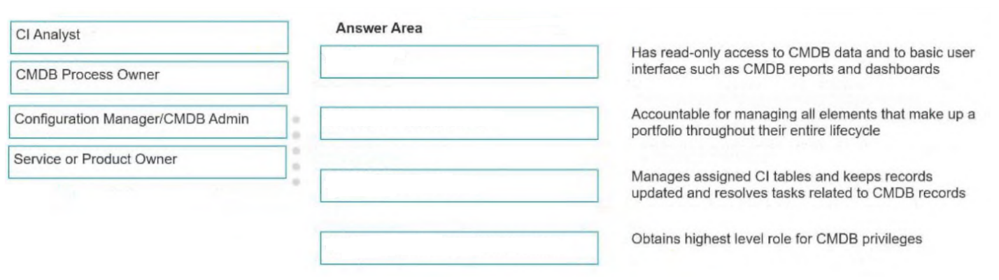
DRAG DROP -
A new ServiceNow customer is assembling a Configuration Management team to support their CMDB.
Drag each role to its corresponding job description.
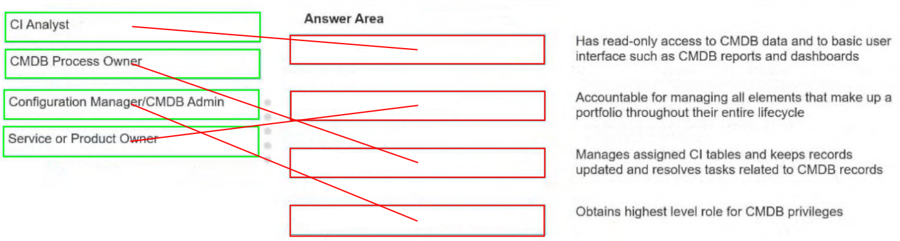
Question 47
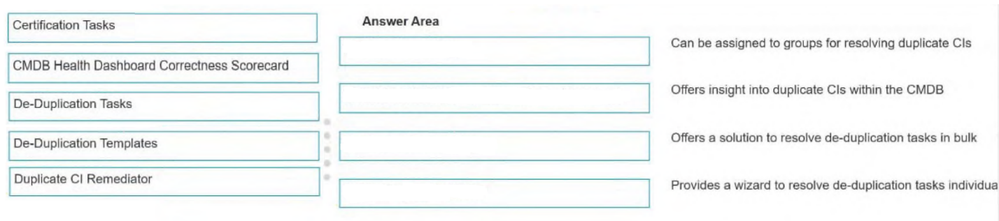
DRAG DROP -
A CMDB Administrator seeks to understand the available tools for preventing, addressing, and remediating duplicate CIs.
Drag and drop each feature with the corresponding outcome.
Some options may not apply.
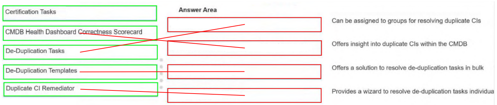
Question 48
A Configuration Manager needs to leverage a policy type to automate the creation and assignment of tasks to validate the existence of CIs.
Which policy type should be used to accomplish this goal?
Question 49
Which is a purpose or requirement of CMDB Data Manager in ServiceNow?
Question 50
A CMDB Data Manager needs to access the ServiceNow platform to create, publish, and manage policies that automate and govern CI lifecycle operations, ensuring the CMDB remains healthy and efficient.
Where can the Data Manager do this?
Question 51
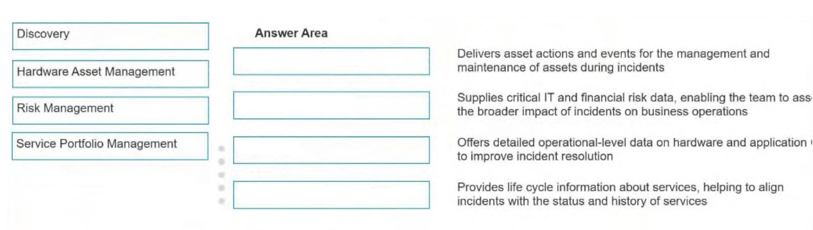
DRAG DROP -
A manufacturing organization has implemented Incident Management in ServiceNow and wants to integrate additional products to enhance its functionality.
Drag each ServiceNow product to the value it brings to supporting Incident Management.
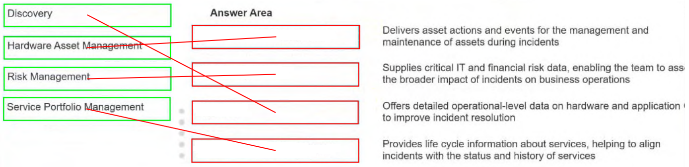
Question 52
Where can a CMDB 360/Multisource CMDB Saved Query be viewed and created in the CMDB Workspace?
Question 53
An organization is changing data centers and needs to know the consequences of the planned changes.
How can Application Service mapping be used as part of Change Management?
Question 54
Where can an administrator perform Natural Language Queries (NLQ)?
Question 55
A healthcare provider faces a critical incident affecting its patient management system. The provider needs to determine the users impacted to mitigate disruption effectively.
Which CSDM-related data should they leverage?
Question 56
A Configuration Manager wants to use the Unified Map.
Where would it be accessed?
Question 57
A service owner is using Unified Map to understand to composition of a service but wants to filter out irrelevant information.
Which options are available to the service owner from the filter panel? (Choose two.)
Question 58
A CMDB Administrator wants to create a CMDB query to find all databases located in Seattle that are connected to application services. They also want to include incidents related to those databases.
Which actions does the company take to build this query? (Choose two.)
Question 59
In a company there is a need to understand the CSDM maturity level needed. Different stakeholders listed a number of use cases that they expect over time.
Which use case requires information objects?
Question 60
A Platform Owner is collaborating with stakeholders in the manufacturing industry to align their CIs with the CSDM 5 framework. They need to map production line monitoring systems to the appropriate CSDM domain.
Which CSDM 5 domain does the Platform Owner use?
Question 61
A development team is working on a project and an application will be deployed to many servers. There will be several security requirements that must be checked to adhere to lawful compliance because the application will be holding customer personal data (PII and PCI).
Where in the CSDM does the development team look to store the information that will be used to satisfy the audits?
Question 62
A customer’s CMDB is aligned to the CSDM Walk stage.
What benefit is provided by the CMDB?
Question 63
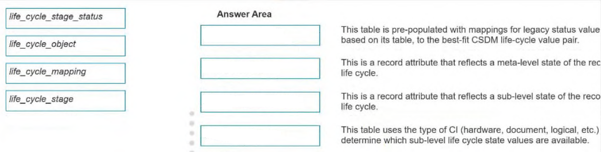
DRAG DROP -
Some steps need to be taken to transition from using different status attributes in the CMDB to life cycle objects.
Drag and drop the objectives/attributes to the description.
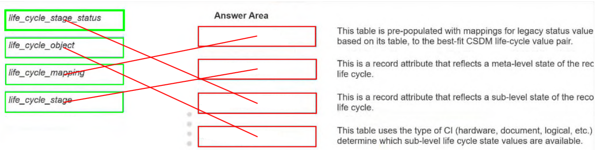
Question 64
A CMDB Administrator wants to improve data quality related to the CSDM.
Which action should the Administrator take to meet this goal?
Question 65
According to the Common Service Data Model (CSDM), a server team is requesting a catalog item be created for infrastructure upgrade requests.
Which role is involved in initiating the request and defining requirements?
Question 66
A CMDB Administrator is evaluating whether to monitor the metrics provided on the CMDB Foundation Dashboard.
Which benefits support the decision to continually monitor the results on this dashboard? (Choose two.)
Question 67
The Configuration Manager is preparing the justification to utilize the CMDB Data Foundations Dashboard.
Which benefits align with the usage of this dashboard? (Choose two.)
Question 68
A Change Manager wants to gain value from CSDM.
How will the Change Management process benefit from CSDM? (Choose two.)
Question 69
Which are business values of CMDB? (Choose two.)
Question 70
A CMDB Administrator is implementing a Vulnerability Response or Security Incident Response and needs to ensure customers have enough context to estimate risk and set task priorities.
Which Get Well Playbook from the CSDM Data Foundation Dashboard helps with this?
Question 71
A CMDB Administrator wants to run the Services Have Owners Identified playbook to remediate the issues shown in the CMDB Data Foundations Dashboard.
Which remediation plays would be used? (Choose two.)
Question 72
A Configuration Management Governance team is transitioning from utilizing legacy CMDB status fields to CSDM life cycle status fields.
Which table can be modified?
Question 73
A CMDB Administrator, viewing the CMDB Data Foundations Dashboard, notices the Unique Locations Result percentage low.
What is the recommended process from the associated playbook to correct this issue?
Question 74
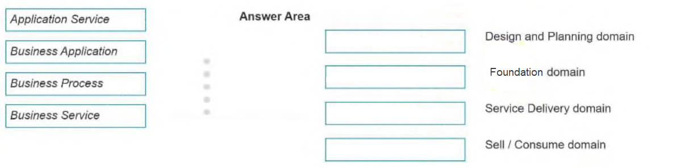
DRAG DROP -
A CMDB Owner starts on the CSDM journey and needs to become familiar with the CSDM domains.
Drag the CMDB objects to the correct CSDM domains.
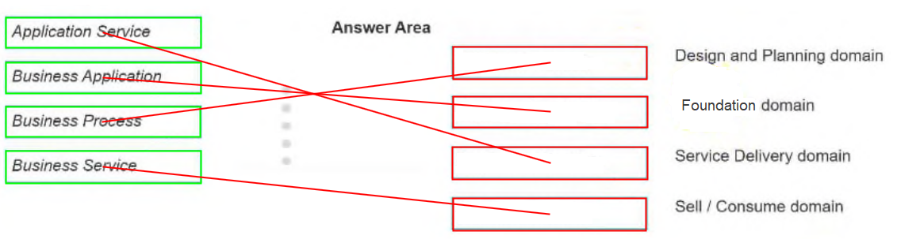
Question 75
A Configuration Manager is planning the implementation of the CMDB.
Which is the prescribed CSDM rollout order?